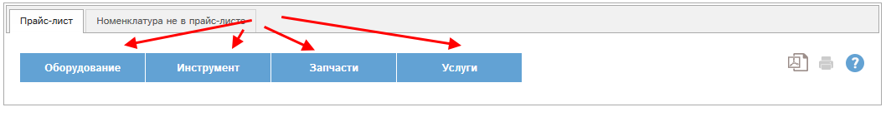
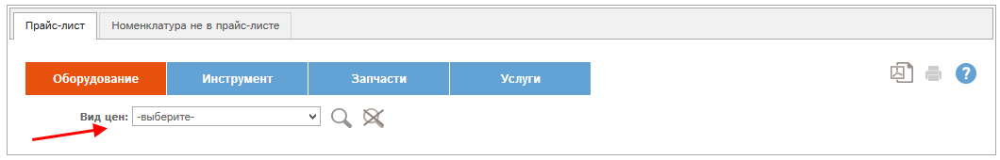
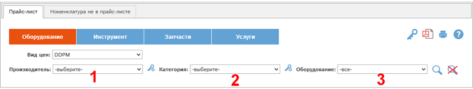
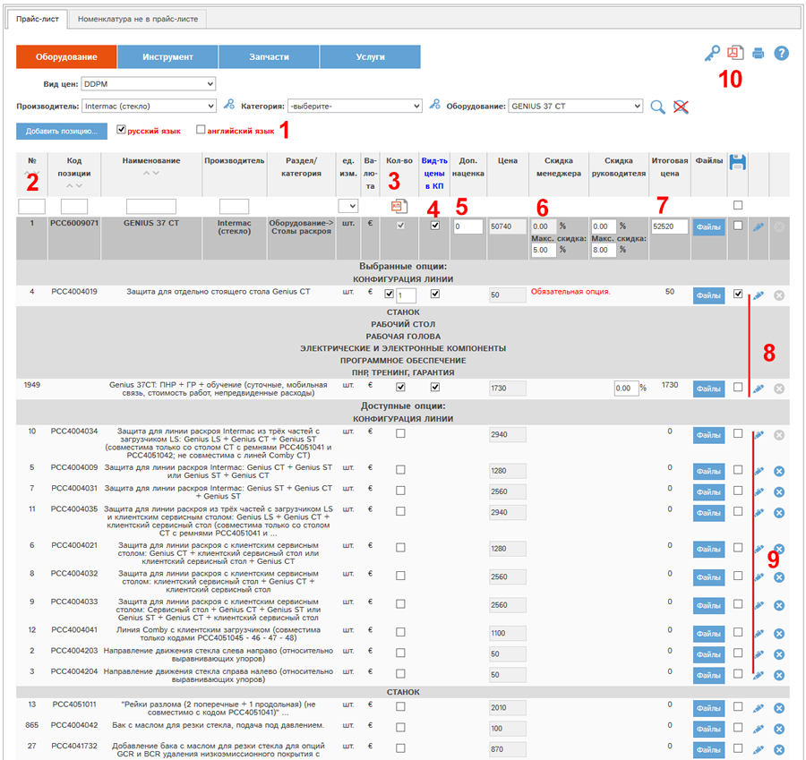
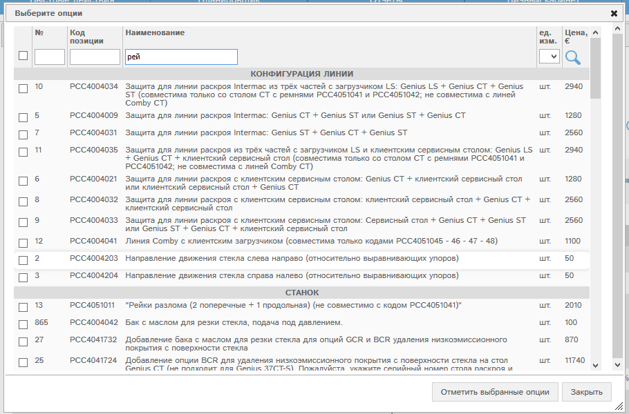
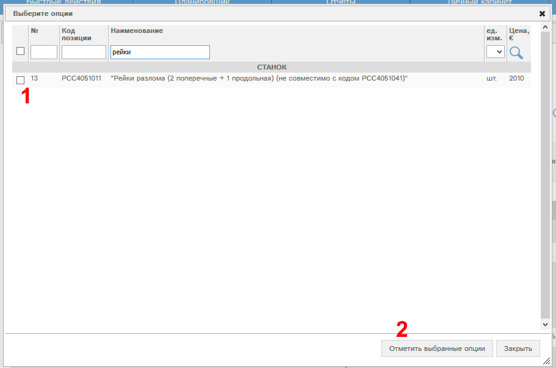
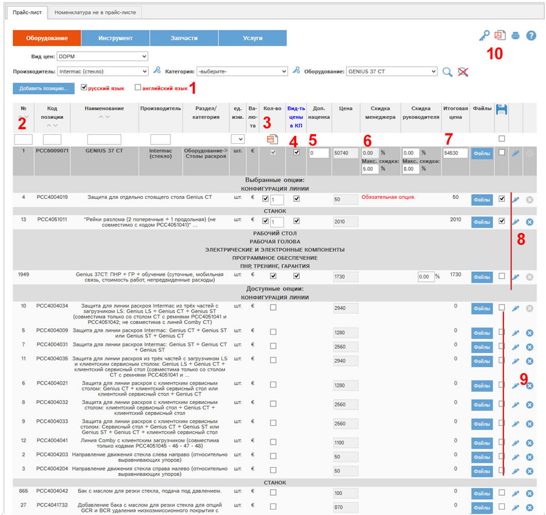

В разделе "Прайс-лист" собраны все прайс-листы, доступные Вам в программе "Интеллектуальные продажи". На основе позиций прайс-листов в программе вы можете формировать коммерческие предложения.
Для начала работы Вам необходимо выбрать раздел прайс-листа:

Рис. Прайс-лист. Начало работы.
Выберем раздел "Оборудование":

Рис. Прайс-лист. Выбран раздел.
В блоке "Вид цен" необходимо выбрать тот вид цен, по которому Вы хотите сформировать коммерческое предложение.
Выберем вид цен DDPM:

Рис. Прайс-лист. Выбран вид цен.
Далее необходимо выбрать данные в следующих полях:
1. Производитель.
2. Категория.
3. При необходимости - Оборудование.
Эти поля можно выбирать в любой последовательности.
Выберем производителя Intermac - стекло, затем оборудование - GENIUS 37 CT.
После выбора нажмем кнопку  .
.
Откроется прайс-лист оборудования GENIUS 37 CT и доступные опции для этого оборудования:

Рис. Прайс-лист оборудования для выбора в коммерческое предложение.
Галочки "русский язык", "английский язык" (1) позволяют указать, на каком из этих двух языков, или на обоих сразу, включать в коммерческое предложение названия опций к оборудованию.
Поля поиска (2):
- №
- код позиции
- наименование
- производитель
- единица измерения
позволяют открыть окно фильтра для быстрого выбора позиций в коммерческое предложение.
Например, в поле поиска "Наименование" начнем печатать слово "рейки". Откроется окно выбора опций:

Рис. Окно выбора опций.
Допечатаем в этом окне слово "рейки" в поле "Наименование". Нажмем  . Будут выведены все опции, содержащие в названии слово "рейки":
. Будут выведены все опции, содержащие в названии слово "рейки":

Рис. Окно выбора опций - опции отфильтрованы.
Нужно отметить галочками требуемые опции (1) и нажать кнопку (2). Опции будут выбраны в прайс-листе, окно выбора будет закрыто.

Рис. Прайс-лист: опция выбрана.
Для выбора опций непосредственно в окне прайс-листа отмечайте их галочками в колонке (3).
Колонка с галочками "Видимость цены в КП" (4) позволяет выводить цены на отмеченные галочками позиции в итоговой таблице в форму коммерческого предложения. Если галочка не отмечена - то цена этой позиции не будет указана.
Поле "Дополнительная наценка" (5) позволяет указать дополнительную наценку для данного коммерческого предложения.
Поля "Скидка менеджера, %" и "Скидка руководителя, %" (6) позволяют указывать скидку по данному коммерческому предложению. В зависимости от Ваших прав, Вам может быть доступно либо поле Скидка менеджера, либо поле Скидка руководителя.
Максимально доступная скидка регулируется:
- правилами максимальных скидок в карте оборудования в прайс-листе
- индивидуальными правилами максимальных скидок в карте сотрудника.
Скидки из этих полей НЕ распространяются на опцию ПНР. При наличии у вас доступа к скидке руководителя и соответствующих прав вы можете указать скидку на ПНР непосредственно в строке опции ПНР.
В поле "Итоговая цена" (7) указана итоговая цена коммерческого предложения.
Итоговая цена автоматически рассчитывается, исходя из выбранных опций и указанной скидки.
Поле доступно для редактирования. При уменьшении цены будет автоматически рассчитана скидка в % и подставлена в доступное вам поле скидки.
Если Вы превышаете максимальную скидку, и Ваши права не позволяют Вам превышать максимальную скидку, то Вы можете создать и сохранить коммерческое предложение с такой скидкой, но не можете его утвердить. Скидка при этом автоматически подставляется в поле "Скидка руководителя".
Утвердить такое КП могут сотрудники с соответствующими правами. Вам будет выведено соответствующее сообщение с перечнем этих сотрудников.
В блоке "Выбранные опции" (8) показаны опции, которые Вы выбрали для включения в КП.
В блоке "Доступные опции" (9) показаны все прочие опции.
Кнопки и (10) позволяют получить текущий прайс-лист в формате pdf, либо его версию для печати.
Для создания коммерческого предложения по выбранным данным нажмите кнопку ("создать коммерческое предложение" (3)).